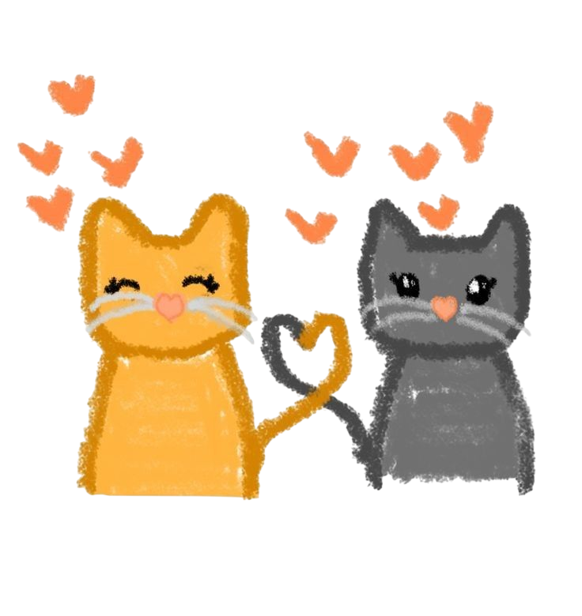
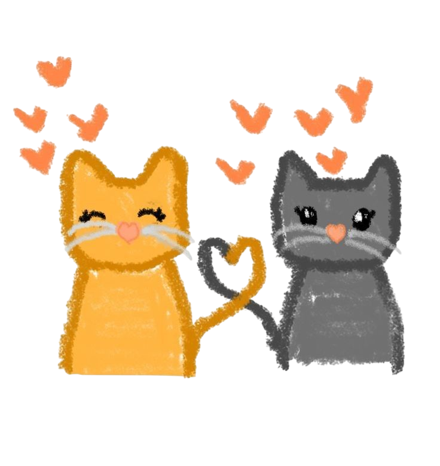

Esta foto me encanta, siempre la veo y me enamoro cada vez mas y mas de vos, por que sos la chica mas linda que vi en mi vida, la mas graciosa, la mas entusiasta, la mas visionaria.
Por que sabes ser buena persona a pesar de que la gente no siempre te lo devuelva, pero aun que sea asi vos nunca dejas de ser vos, y eso es lo que me encanta, lo que amo de vos.
Te lo juro que es una banda lo que siento por vos y nunca voy a dejar de sentirlo, a pesar de que diga cosas malas, son solo momentos de los cuales no estoy orgulloso, pero si algo se, es que quiero estar con vos el mayor tiempo que pueda de mi vida.
No te vayas nunca Juli, sos el amor de mi vida y te amo una banda, gracias por ser como sos, perdon por no cumplir tus expectativas, pero siempre voy a ser tu bebe chiquitito en las buenas y en las malas.
TE AMO


 
